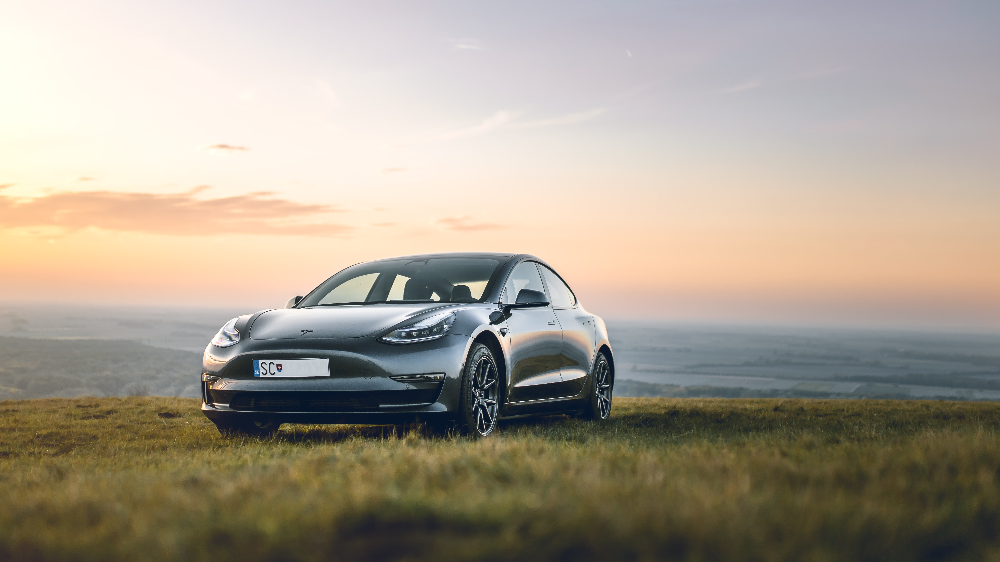

MODEL S
The Model S is a five-door liftback sedan. Deliveries began on June 22, 2012. The car became the first electric vehicle to top the monthly sales ranking in any country, when it achieved first place in the Norwegian new car sales list in September 2013.The Model S won the 2013 Motor Trend Car of the Year, the 2013 "World Green Car", Automobile magazine's 2013 "Car of the Year", Time magazine's Best 25 Inventions of the Year 2012 award,as well as the 2019 Motor Trend "Ultimate Car of the Year". The Model S was the best-selling plug-in electric car worldwide for the years 2015 and 2016, selling an estimated 50,931 units in 2016.[36] By the end of 2017, it was the world's second best selling plug-in electric car in history (after the Nissan Leaf), with global sales of 200,000 units.[98] In June 2020, Tesla announced that the Model S Long Range Plus had an EPA range of 402 miles (647 km), the highest of any battery electric vehicle at the time.
MODEL X
The Tesla Model X is a mid-size crossover SUV. It is offered in 5-, 6- and 7-passenger configurations. The Model X was developed from the full-sized sedan platform of the Model S. The rear passenger doors open vertically with an articulating "falcon-wing" design. Deliveries started in September 2015. In 2016, after one full year on the market, the Model X ranked seventh among the world's best-selling plug-in cars. The United States is its main market, with an estimated 57,327 units sold through September 2018.
MODEL 3
The Model 3 is a four-door fastback sedan. Tesla unveiled the Model 3 on March 31, 2016. Potential customers began reserving spots earlier that day with a refundable deposit. One week after the unveiling, Tesla reported over 325,000 reservations. Bloomberg News claimed that, due to the number of reservations, "the Model 3's unveiling was unique in the 100-year history of the mass-market automobile." Limited vehicle production began in July 2017. Since March 2020, the Model 3 is the world's best selling electric car in history, and cumulative global sales passed the 1 million milestone in June 2021. The Model 3 has ranked as the world's best selling plug-in electric car for three consecutive years, from 2018 to 2020,and also as the best selling plug-in electric car in the United States since 2018. The Model 3 also set records in Norway and the Netherlands, as the best selling passenger car model in those countries in 2019.
MODEL Y
The Model Y is a compact crossover utility vehicle. The Model Y is built on a platform that shares many components with the Model 3.The car has up to three rows of seats (up to 7 people),68 cubic feet (1.9 m3) of cargo space (with the second and third rows folded),[117] and has an EPA range of up to 326 miles (525 km). The Model Y was unveiled on March 14, 2019.Deliveries for the Model Y started on March 13, 2020. The Tesla Model Y is being manufactured at Tesla Factory in Fremont, California, as well as in Giga Shanghai in China. A version of the Model Y is also expected to be produced at Giga Berlin once the factory is open.